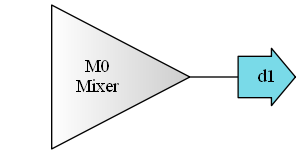
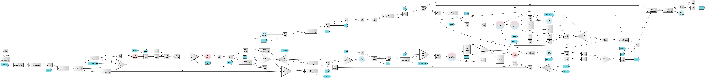

Find unit operations and manage flowsheets¶
Retrieve any Unit, Stream or System object by ID¶
find has access to Flowsheet objects where all BioSTEAM objects are
registered. The main flowsheet defaults to the ‘Default’ flowsheet:
In [1]:
import biosteam as bs
bs.find
Out[1]:
<find: mainflowsheet=Default>
Find a Unit object:
In [2]:
unit = bs.Mixer('M0')
bs.find('M0')
Out[2]:
<Mixer: M0>
Find a Stream object:
In [3]:
bs.find('d1')
Out[3]:
<Stream: d1>
All Unit objects can be viewed as a diagram:
In [4]:
bs.find.diagram()

All Stream, Unit, and System objects are stored as dictionaries in
find:
In [5]:
bs.find.stream
Out[5]:
{'d1': <Stream: d1>}
In [6]:
bs.find.unit
Out[6]:
{'M0': <Mixer: M0>}
In [7]:
bs.find.system
Out[7]:
{}
Switch between flowsheets¶
A new Flowsheet objects may be created and set as the main flowsheet:
In [8]:
bs.find.mainflowsheet = bs.Flowsheet('New flowsheet')
bs.find
Out[8]:
<find: mainflowsheet=New flowsheet>
Now all new objects will be registered in the new flowsheet:
In [9]:
unit = bs.Mixer('M1')
bs.find.diagram()

Note that objects in the original flowsheet are not defined anymore and searching them would raise an error:
In [10]:
bs.find('M0')
---------------------------------------------------------------------------
ValueError Traceback (most recent call last)
<ipython-input-10-503e10b7cb09> in <module>()
----> 1 bs.find('M0')
~\OneDrive\Code\biosteam\biosteam\flowsheet.py in __call__(self, item_ID)
156 or self.unit.get(item_ID)
157 or self.system.get(item_ID))
--> 158 if not obj: raise ValueError(f"No registered item '{item_ID}'")
159 return obj
160
ValueError: No registered item 'M0'
All Flowsheet objects are added to the flowsheet dictionary.
Switching between flowsheets is easy:
In [11]:
bs.find.mainflowsheet = bs.find.flowsheet['Default'] # Switch back to default flowsheet
bs.find
Out[11]:
<find: mainflowsheet=Default>
As an example, the lipidcane biorefinery defines its own flowsheet
and leaves it as the main flowsheet when you import it:
In [12]:
import lipidcane # You must pip install lipidcane first
bs.find
Out[12]:
<find: mainflowsheet=Lipidcane>
In [13]:
bs.find.diagram()
